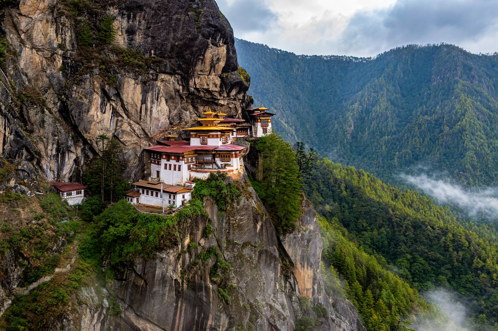

Bhutan
| Capital | Thimphu |
|---|---|
| Government | Constitutional monarchy |
| Languages | Dzongkha (official) |
| Known for | Gross National Happiness; carbon-negative status |

[Image: Paro Taktsang (Tiger's Nest monastery) clinging to a cliff face above a pine forest in Bhutan]Bhutan is a landlocked Himalayan kingdom in South Asia, bordered by China and India. Its capital is Thimphu. With a population of under a million, it is known for its dramatic mountain landscapes, its Buddhist culture and monasteries such as Tiger's Nest (Paro Taktsang), and its development philosophy of Gross National Happiness.
Bhutan historically isolated itself from the outside world, opening to visitors only in 1974; television and the internet arrived in 1999. It transitioned from absolute monarchy to constitutional monarchy in 2008, with its first parliamentary elections.
Gross National Happiness
The phrase was coined by King Jigme Singye Wangchuck in the 1970s, expressing the view that development should be measured by collective happiness and well-being rather than gross national product alone. The GNH index surveys domains including health, education, living standards, ecological diversity, cultural resilience and good governance.
Bhutan is constitutionally required to keep at least 60% of its land under forest cover and is often described as the world's first carbon-negative country, absorbing more carbon than it emits.
Economy and society
Hydropower exported to India dominates the economy, alongside agriculture and carefully limited, high-value tourism charged at a daily sustainable-development fee. The currency is the ngultrum, pegged to the Indian rupee.
In 2023 Bhutan graduated from the United Nations' least-developed-country category. A sensitive issue in its recent history was the expulsion and flight in the 1990s of many Nepali-speaking Lhotshampa, tens of thousands of whom lived in refugee camps in Nepal before resettlement in third countries.